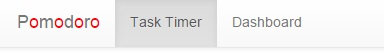

Routing between different pages (after login)

Documentation
In this week's experiment, I used AngularJS routing to switch between different pages.
Routing is implemented with ng-view in html page and routeProvider in angular js
file.The routeProvider configures the template url and controller according to event url.
Also, to switch pages programmatically inside angular js, I used $location.path() to
change current browser url path to another url. This is used when user logined in, I want to show the
timer page instead of the home page.
Code Snippet
Following code is the configuration of routing.
app.config(['$routeProvider',
function($routeProvider){
var rootPath = ''
$routeProvider.
when(rootPath + '/home', {
templateUrl: 'home.html',
controller: 'homeController',
controllerAs: 'homeCtrl'
}).
when(rootPath + '/timer', {
templateUrl: 'timer.html',
controller: 'timerController',
controllerAs: 'timerCtrl'
}).
when(rootPath + '/dashboard', {
templateUrl: 'dashboard.html',
controller: 'dashboardController',
controllerAs: 'dashboardCtrl'
}).
otherwise(rootPath + '/home')
}]
)
Following code shows that when user logged in, it'll switch to timer page automatically. Otherwise (logged out), it'll show the home page since there is no more timer page.
$scope.$watch('currentUser', function(){
if ($scope.currentUser) {
$location.path('/timer')
} else {
$location.path('/home')
}
})